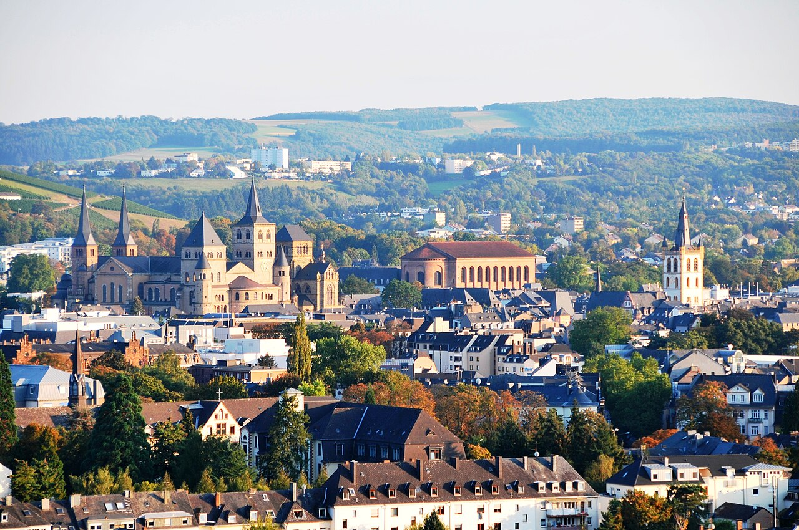

Pin one Saturday at
schanz. in Piesport
[1]. The rest of the weekend lines up against
the only IT week in the region: 27–31 July, Uni Trier.
0
Conferences inside strict 30 km
[15]
4
Co-located CS confs, week of Jul 27
[6]
34 km
Piesport → Trier (just over)
[3]

Trier · 34 km by road
Campus I, Tarforst — the closest part of the city to Piesport
July
2026 · Hauptmonat / headline month
Mon
Tue
Wed
Thu
Fri
Sat
Sun
1
3
4
5
6
7
8
9
10
11
12
13
14
15
16
17
18
19
20
21
22
23
24
25★ schanz.
26
27
28
29
30
31
1★ schanz.
2
Mon27
Tue28
Wed29
Thu30
Fri31
Plenary track
CiE 2026
Computability in Europe — “Timeless Machines.” €200/€150 before 30 Jun
Universality track
MCU 2026
Machines, Computations & Universality
— ends 29 Jul —
Analysis track
— starts 29 Jul →
CCA 2026
Computability & Complexity in Analysis · CiE satellite
Workshop
GSW 2026
Grammar Systems Workshop — co-located
June
2026
M
T
W
T
F
S
S
1
3
4
5
6
7
8
9
13
14
15
18
21
22
23
24
26
27
28
29
30
August
2026
M
T
W
T
F
S
S
1★ schanz.
2
3
4
5
6
7
8
9
10
11
12
13
14
15
16
17
18
19
20
21
22
23
24
25
26
27
28
29
30
31
No physical IT events in scope · IHK live-online seminars only
September
2026
M
T
W
T
F
S
S
1
2
3
4
5
6
7
8
9
12★ schanz.
13
14
15
16
17
18
19
20
21
22
23
24
25
26
27
28
29
30
Autumn TBA: Tri-Lux BarCamp (Loebstraße 18)
CiE
MCU
CCA
GSW
IRDT
TCDH colloquia
MITL · WRO
vocatium career fair
Westnetz tour ✓ inside 30 km
TBA
★ Saturday for schanz.
Appointments — 14 entries
Sorted by date · ✓ inside 30 km · ⚠ Trier (~34 km) · scope per canonical
★ Headline venue
Tarforst, SE edge of Trier — closest part of the city to Piesport. Hosts CiE/MCU/CCA/GSW the week of 27 Jul [6].
Second pick · 10–11 Sep
Politicians as Targets — Harmful Online Speech. Campus II, Behringstraße 21 [10].
Inside 30 km · 17 km away
Bernkastel-Kues
Wine + SME town. Zero standing IT meetups in 2026 — Wirtschaftskreis only lists a Westnetz substation tour [15].
Bottom-line picks · pin schanz.
If the dates flex, line the weekend up against the week of 27 July
- CS academic + dinner. Book schanz. for Sat 25 Jul or Sat 1 Aug 2026, attend the CiE/MCU/CCA/GSW cluster Mon–Fri. Drive: ~35 min Tarforst → Piesport [3].
- Digital-law angle. Book schanz. for Sat 12 Sep 2026, attend IRDT Conference Thu–Fri.
- Quick local-network fix. 10 Jun MITL MEETL — Wednesday evening Trier; useful drink if already in the region, won't pair with a Saturday at schanz. [11]
- Strictly within 30 km, no Trier. Nothing matches “IT conference” or “tech event.” One Westnetz tour. Honest answer [15].
The 30 km line, counted strictly
Bernkastel-Kues (17 km [4]) and Wittlich (~15 km) are inside. Trier (34 km road [3]) is not.
0Pure IT confs
0Tech meetups
1Adjacent · Westnetz tour
Practitioner / community footnotes
- MITL runs monthly MEETLs plus a “Meet & Grill” summer outdoor session and supports the Tri-Lux BarCamp (historically October, no 2026 date confirmed [16]).
- TCDH colloquia run weekdays — academic, not industry [12].
- Meetup.com Trier has no tech/dev groups; the most active locals are language exchanges and board games [19].
- IHK Trier 2026 IT/AI seminars are all live-online — KI Manager (17 Aug → 26 Nov), Digitalisierungsmanager (15 Sep → 1 Dec) [17].
- Out of scope: Nexus Luxembourg AI summit (~80 km), Saarbrücken (~90 km).
Sources used on this page
Other sub-topics in this weekend playbook